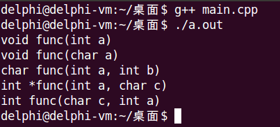
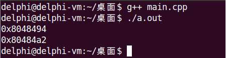
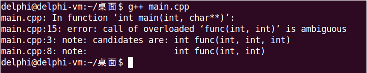
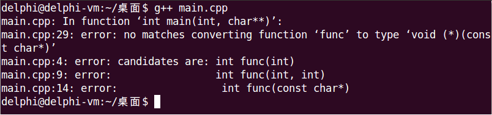
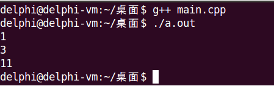

函数重载，指的是用同一个函数名搭配不同的参数，从而定义不同的函数。
重载函数在本质上是相互独立的不同函数，它们的函数类型不同。
函数重载至少需要满足下面三个条件之一
下面是函数重载的一些注意事项
#include <stdio.h>
void func(int a)
{
printf("void func(int a)\n");
}
void func(char a)
{
printf("void func(char a)\n");
}
char func(int a, int b)
{
printf("char func(int a, int b)\n");
return 'a';
}
int *func(int a, char c)
{
printf("int *func(int a, char c)\n");
return NULL;
}
int func(char c, int a)
{
printf("int func(char c, int a)\n");
return 0;
}
int main()
{
func(1);
func('a');
func(1, 2);
func(1, 'a');
func('a', 1);
return 0;
}
/*
* 打印重载函数的地址，证明其本质是互不相同的函数
*/
#include <stdio.h>
int add(int a, int b) // 函数类型为int(int, int)
{
return a + b;
}
int add(int a, int b, int c) // 函数类型为int(int, int, int)
{
return a + b + c;
}
int main()
{
printf("%p\n", (int(*)(int, int))add); //打印add入口地址时，根据函数类型进行强制类型转换
printf("%p\n", (int(*)(int, int, int))add);
return 0;
}
通过输出结果，可以看出构成重载的两个func函数地址不同，说明重载函数的本质确实是相互独立的不同函数。
当函数默认参数遇上函数重载，会发生什么？下面的代码，C++编译器如何选择调用哪一个func？
#include <stdio.h>
int func(int a, int b, int c = 0)
{
return a * b * c;
}
int func(int a, int b)
{
return a + b;
}
int main(int argc, char *argv[])
{
int c = func(1, 2); //which one?
return 0;
}
从编译结果看以看出，C++编译器也不知道该如何选择了，因此直接报错：第15行对重载函数func的调用是模糊的、不明确的，因为有两个可选的函数。
我们来分析下编译器调用重载函数的准则
上述示例代码，就是由于匹配结果出现了二义性，而导致的编译失败。
将重载函数名赋值给函数指针时
#include <stdio.h>
#include <string.h>
int func(int x)
{
return x;
}
int func(int a, int b)
{
return a + b;
}
int func(const char *s)
{
return strlen(s);
}
typedef int(*PFUNC1)(int a);
typedef int(*PFUNC2)(int a, int b);
typedef int(*PFUNC3)(const char *s);
typedef void(*PFUNC4)(const char *s);
int main(int argc, char *argv[])
{
PFUNC1 p1 = func;
PFUNC2 p2 = func;
PFUNC3 p3 = func;
PFUNC4 p4 = func;
printf("%d\n", p1(1));
printf("%d\n", p2(1, 2));
printf("%d\n", p3("hello world"));
return 0;
}
编译第29行报错，根据匹配规则，第一步匹配到int func(const char *s)，第二步匹配函数类型失败，不存在函数类型为void(*)(const char *)的func。
注释掉第29行，再次编译运行结果如下。
